Query adalah 'permintaan data' kita berupa bahasa bisnis, untuk mengolah data dalam tabel(-tabel) menjadi satu informasi yang bisa dimengerti. Seperti mengelompokkan sepuluh penjualan terbesar oleh customer yang dimiliki. Ia bisa berdasarkan pada satu tabel saja, atau pada dua/lebih tabel, ataupun berdasarkan pada query yang telah ada.
Query, Apasih Manfaatnya Query ?
Dengan Query kita dapat :
a. Menampilkan data-data tertentu pada suatu table, contohnya kita hanya ingin melihat data pada table barang yang kode barangnya "B001"
b. Menampilkan data dari dua table atau lebih dengan syarat anatr table itu ada field yang berhubungan. Contohnya kita ingin melihat Nomor Faktur "F0001" itu siapa pemiliknya. Di sini kita mengambil data dari table Header Penjualan dan Table Karyawan, Sebagai penghubungnya adalah field NIK.
c. Dapat melakukan operasi perhitungan.
Itulah tiga fungsi utama query.
Query biasanya digunakan sebagai sumber data untuk Report.dan Form.
Bagaimanasih cara membuat query.
Langkah-langkah membuat Query
1. Pada Jendela database pilih Query lalu klik dua kali Create Query In Design View.
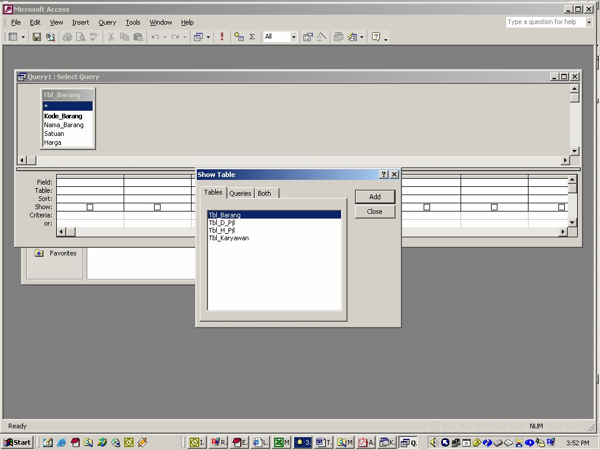
2. Pada Jendela Show Table Pilih Table-Table yang akan dipakai dalam Query, mislanya kita pakai table Barang. Klik Tbl_Barang lalu klik Add. Jika tidak ada table yang ingin dipakai lagi klik Close.
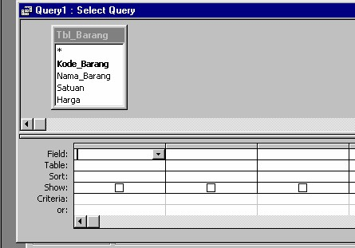
Keterangan
Field = Nama Field yang ingn ditampilkan
Table = Nama Table dari Filed tersebut
Sort = Mengurutkan Data hasil query
Show = Mengatur Field ditampikan atau tidak
Criteria = Syarat dari data yang ingin ditampilkan
3. Untuk menampilkan seluruh Field dan seluruh Record pada Tbl_Barang Pada Field, klik tombol panah ke bawah pilih Tbl_Barang.*
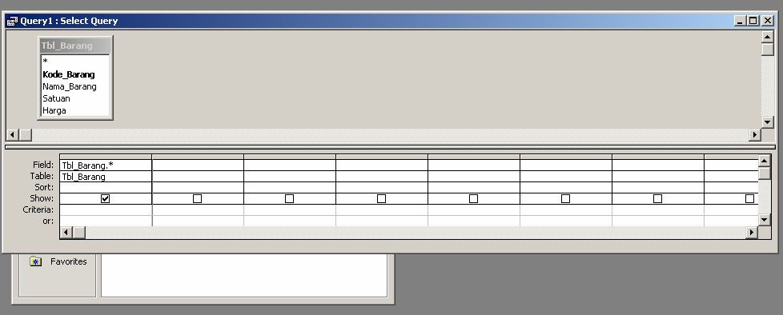
4. Untuk melihat hasil Query Pilih menu Query lalu klik Run atau bisa langsung mengklik icon Run pada toolbar.
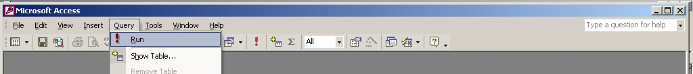
Hasilnya
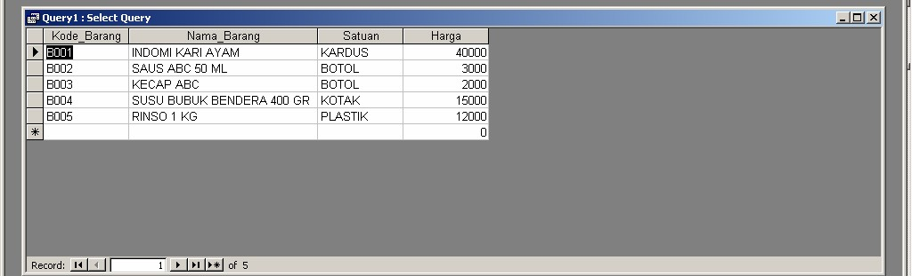
5. Untuk menyimpan Query klik icon disket, pada jendela save beri nama query lalu klik OK, Maka Query akan tersimpan dan dapat kita gunakan kapan saja.
6. Untuk menampilkan field-field tertentu saja. Misalnya kita hanya ingin menampilkan Field KoDe_Barang dan Nama_Barang. Caranya pada Field klik tombol panah ke bawah. Pilih Field Kode_Barang, lalu arahkan kursor
kesebelahnya lalu klik tombol panah kebawah pilih Nama Barang. Pastikan kotak kecil pada show tercentang (jika kotak pada show tercentang maka field akan ditampilkan, tetapi bila tidak maka field tidak di tampilkan).
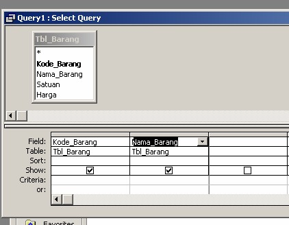
Bila dijalankan, hasilnya
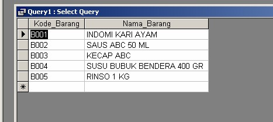
7. Untuk Menampilkan data barang Yang Kode Barangnya = B001. caranya adalah Pilih field-filed yang akan ditampilkan pada field Kode_Barang Criterianya diketik B001.
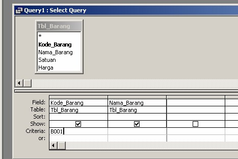
Bila dijalankan hasilnya
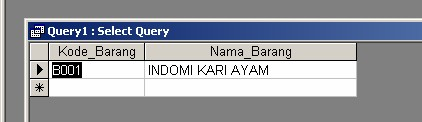
8. Untuk Menampilkan nomor faktur "F0001" siapa yang punya. Caranya adalah pada saat kita memilih table yang akan digunakan pada query, Pilih Tbl_H_Pjl lalu klik Add, Pilih Tbl_Karyawan, baru klik Close. Kita harus membuat hubungan antara table Tbl_H_Pjl dangan Tbl_Karyawan caranya adalah klik field NIK pada Tbl_H_Pjl tahan lalu geser ke arah field NIK pada Tbl_karywan "akan muncul garis penghubung kedua table" (Jika sudah ada tidak perlu membuat penghubung). Pilih Field-field yang akan ditampilkan, pada field No_Fak pada criterinya diketik "F0001". Setelah itu Jalankan Query.
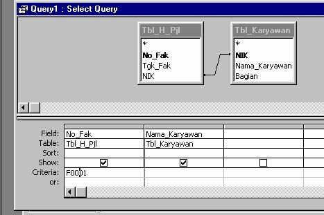
Bila di jalankan hasilnya
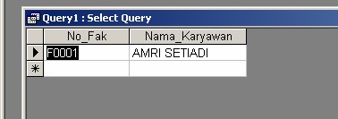
9. Untuk melakukan operasi perhitungan contohnya kita buat query untuk sub form penjualan. Caranya :
a. Klik Query, lalu klik dua kali Design View pilih tbl_D_Pjl klik Add klik close
b. Pada jendela Query buat Query seperti dibawah ini
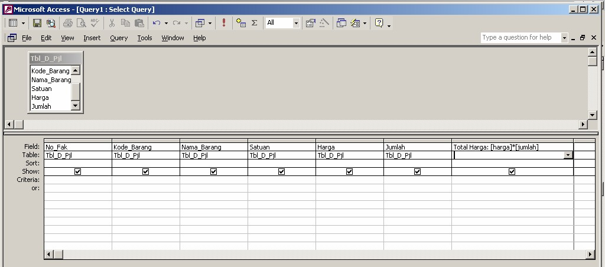
Pada kolom terakhir pada field ketikan " Total Harga = [Harga] * [Jumlah]
Jika dijalankan Hasilnya
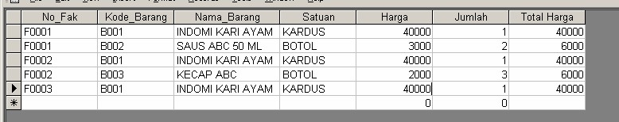
c. Simpan Query dengan nama qry_Detail_Penjualan
10. Query itu ada beberapa jenis yaitu :
a. Select Query (yang sedang kita praktekan). Untuk menampilkan data
b. Crosstab Query
c. Make-Table Query (Untuk Menyimpan Data hasil Query kedalam rable Baru)
d. Update Query.(untuk mengupdate nilai dari suatu record atau field)
e. Append Query (untuk memasukan data hasil query kedalam table)
f. Delete Query (Untuk menghapus data pada table)
Untuk Query saya cukupkan sampai disini dulu untuk Query Crosstab, Update dan lainnya kita bahas dikesempatan yang lain.
Copyright © Herlan Lesmana
Created with the Freeware Edition of HelpNDoc: Easily create Web Help sites